New to our water? Tampa Bay is one of the best boating areas in America — warm water most of the year, islands you can only reach by boat, and a sunset worth planning your day around. These are the places we'd send our own family.
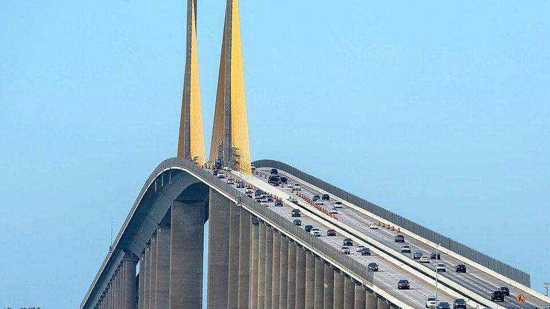
The giant yellow bridge over the mouth of the bay. Sailing under it is a Tampa Bay rite of passage — and it's stunning at sunset.
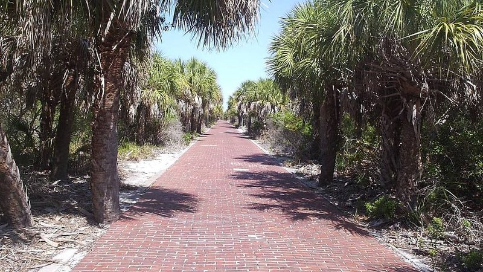
A boat-only island at the mouth of the bay with a lighthouse, old fort ruins, and clear water. No cars, no crowds.
An undeveloped island preserve near St. Pete Beach. Anchor off it for swimming and shelling — it feels like the Florida of 100 years ago.
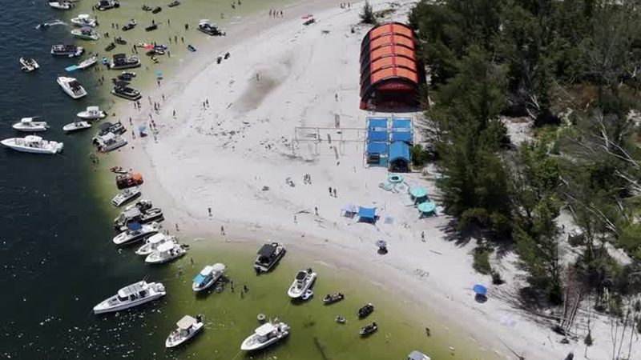
Tampa Bay's famous sandbar hangout. On a weekend it's a floating party; on a weekday it's your own private beach.
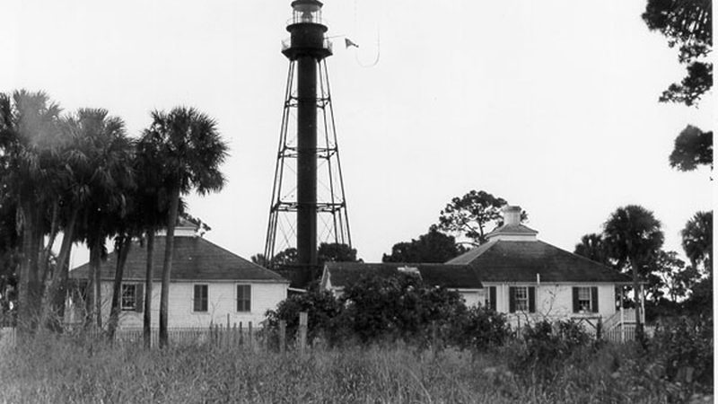
A chain of white-sand islands off Tarpon Springs. The water here is as clear as it gets in Tampa Bay.
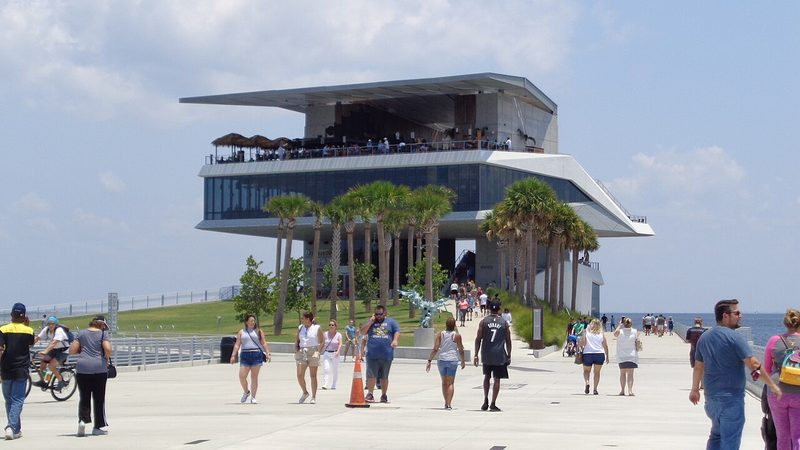
Dock downtown and walk the pier — restaurants, a rooftop view of the whole bay, and the best skyline photo in the area.
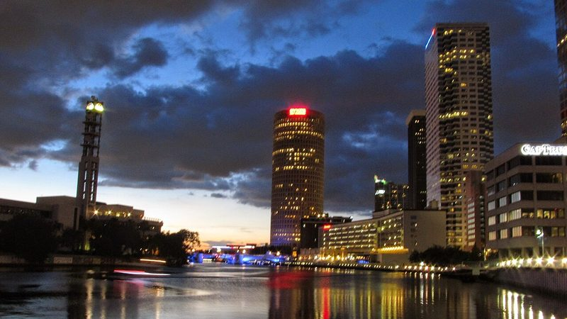
Arrive by boat or water taxi and walk 2.6 miles of downtown waterfront — restaurants, parks, and museums the whole way.
Idle upriver into downtown and the skyline stacks up right over the bow.

The pink palace on the sand — cruise the Pass-a-Grille channel at golden hour for the best angle in the bay.

A bare sandbar refuge packed with nesting birds — closed to landing year-round, so take in the show from the water and keep your distance.
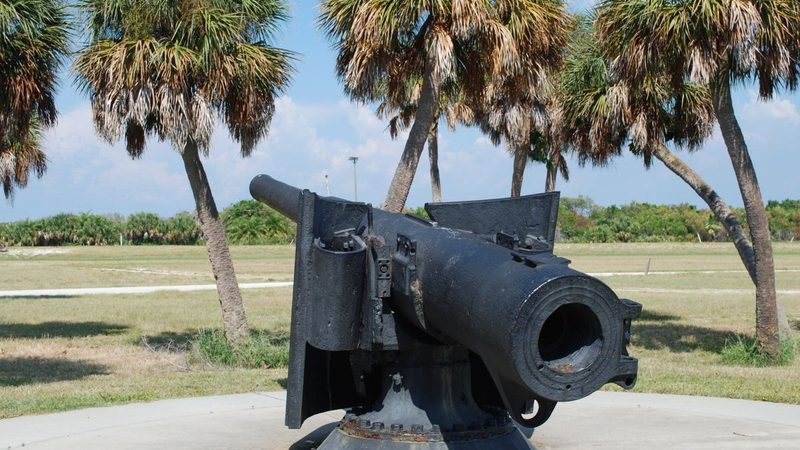
Five connected islands with a historic fort, two fishing piers, and the ferry to Egmont Key. Start here if you only have one day.
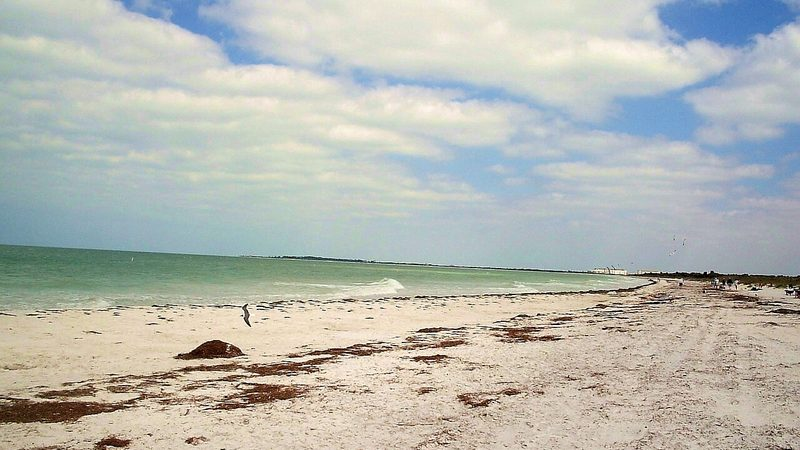
Reached by ferry or your own boat. Natural, quiet, and regularly named one of the best beaches in America.
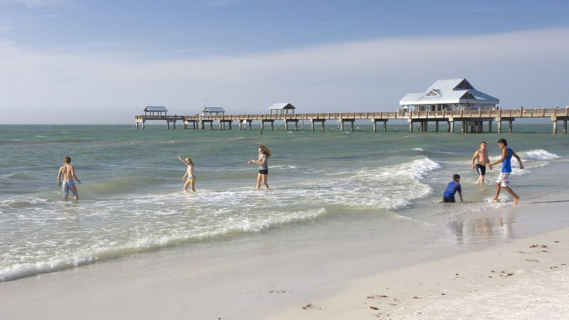
Wide white sand and a sunset celebration with street performers every single night at the pier.
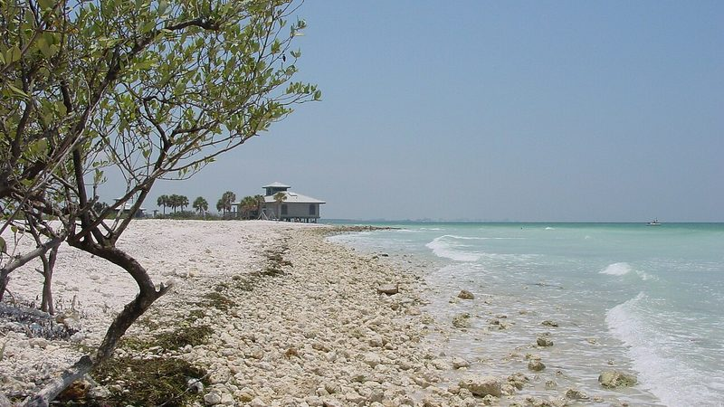
More than four miles of beach plus a nature trail with osprey and eagle nests.
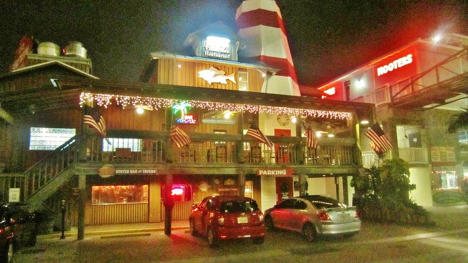
A working fishing village turned boardwalk — dolphin tours, seafood restaurants, and boats coming and going all day.
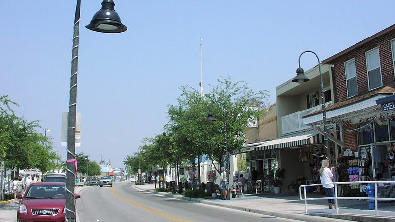
A Greek sponge-diving village. Tour boats, bakeries, and a working waterfront unlike anywhere else in Florida.

In winter (roughly November–April), hundreds of manatees gather in the warm water here. Free, and unforgettable.
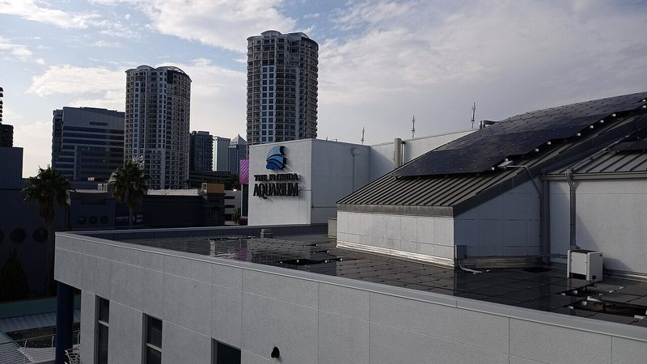
One of the country's best aquariums, right on the downtown Tampa waterfront next to the cruise port.
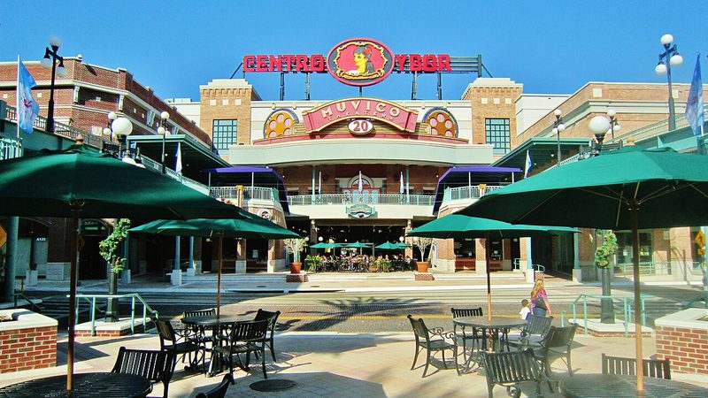
Tampa's historic cigar district — brick streets, roosters, and some of the best food in the city.
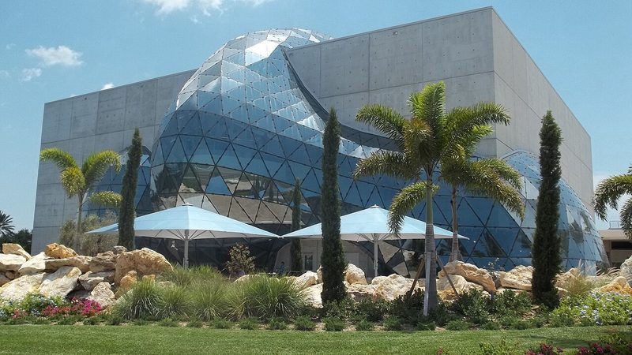
World-class art in a building that's a work of art itself, right on the downtown waterfront.
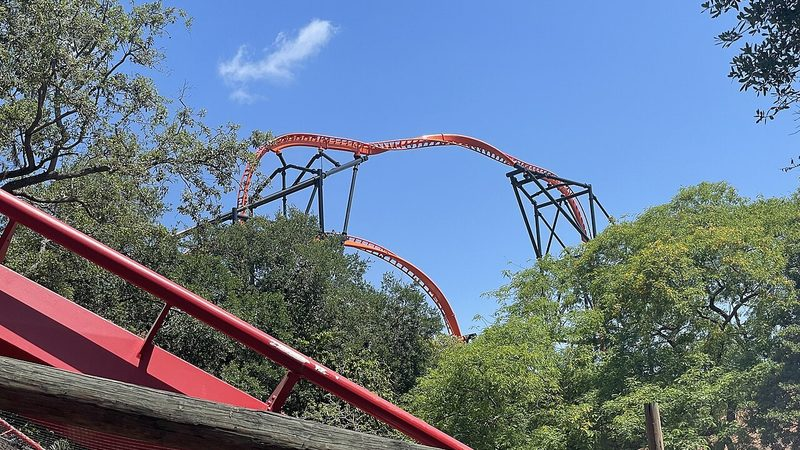
The big one for families — coasters and a safari in the middle of Tampa.
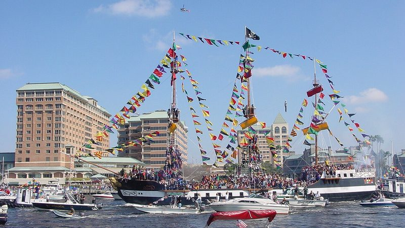
Tampa's pirate invasion and parade season — hundreds of boats join the flotilla. The biggest weekends of the year on our water.
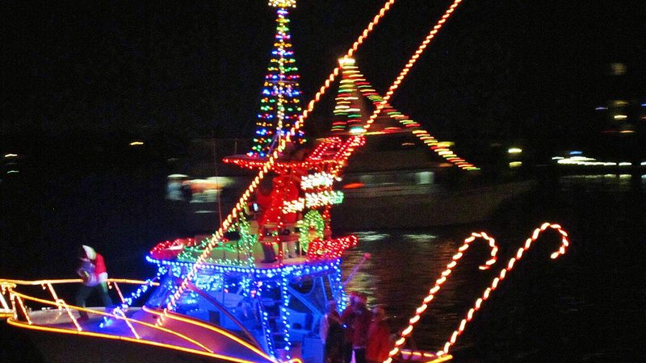
Lighted boat parades all month, all over the bay. Every date is on our Events calendar.
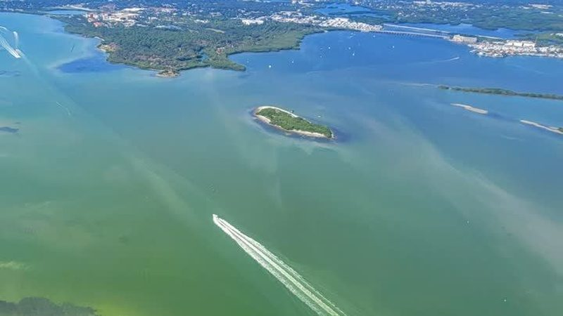
Manatees inshore, mild weather, and the best boating of the year. This is when Tampa Bay shows off.
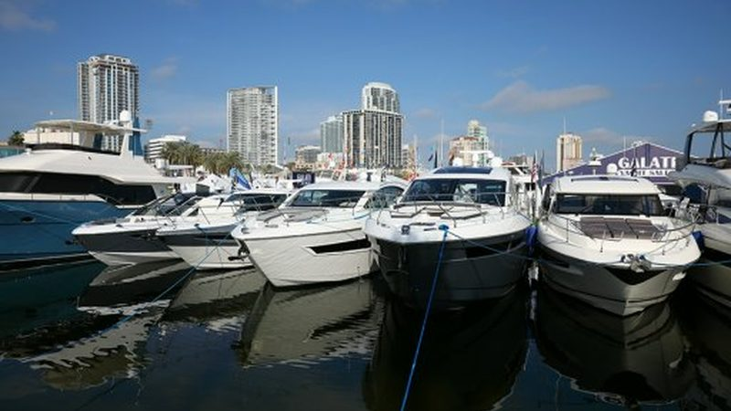
Every boat show in Florida — Fort Lauderdale, Miami, Palm Beach and more — is on our Events calendar, free.
Every spot above is on our Boater's Map. Tides, weather, the full events calendar and the cheapest fuel in the bay are here too — free, always.
One short email a week — the weekend's events, the best weather windows, and local know-how. Free, no spam, ever.
TampaBayBoating.com is 100% free for everyone — local marine businesses sponsor it so boaters and visitors never pay.
Photos: Tampa Bay Boating, plus Wikimedia Commons — Jackdude101 (CC BY-SA 4.0), Miosotis Jade (CC BY-SA 4.0), Philipp Michel Reichold (CC BY-SA 2.5), Michel Rathwell (CC BY 2.0), Christopher Hollis (public domain), Richard Mc Neil (CC BY 3.0), AbeEzekowitz (CC BY 2.5), MatthewHoobin (CC0), Ebyabe (CC BY-SA 3.0), Adog (CC BY-SA 4.0), Zammerman (CC BY 4.0).